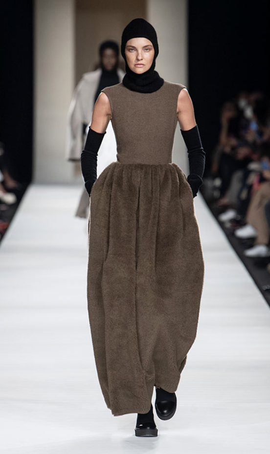
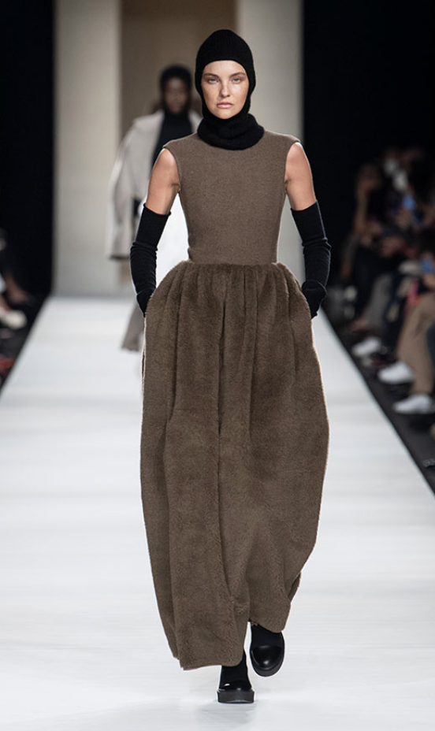

ANNE QVIST
HOUSE OF FASHION

 

“Med styrken af denne Kærlighed og stemmen fra dette Kald vil vi ikke stoppe udforskningen, og enden på al vores udforskning vil være at ankomme der, hvor vi begiver os ud og kende stedet for første gang.”
- T. S. Eliot
Marina Rinaldi, oldemor til grundlæggeren, ejede og ledede i 1850 et vigtigt atelier i centrum af Reggio Emilia: en håndværkeraktivitet, som skilte sig ud for sin opmærksomhed på detaljer og finish. En næsten visceral lidenskab, der derefter blev overleveret til hendes barnebarn, Giulia Fontanesi Maramotti, som i 1925 begyndte at undervise i syning og modellering på egen hånd, og udgav en række bind dedikeret til “teorien om klipning”.
Det er i denne sammenhæng, at Cavaliere Achille Maramotti grundlagde det første firma i Max Mara Group i 1951 , i dag et af de vigtigste internationale modehuse og anerkendt i hele verden som forløberen for moderne pret-à-porter : dametøj “Haute de gamme” produceret i overensstemmelse med industrielle processer af fremragende kvalitet.
Max Mara. Sprød lyd og nem at udtale på alle sprog.

Lækkert tøj, tasker og sko Vi har et stort udvalg fra Max Mara. Vi kører med varer fra Weekend max mara, Lesiur, Beach wear, Persona by Marina Rinaldi, Marina Sport / Voyage & Persona N.O.W. Hos os får i altid god og personlig betjening, og vejledning. Vi sørger for forandringer, hvis det er nødvendigt. Vi har altid et bredt udvalg i både størrelser og farver. Vi er en fysisk butik på Ordrupvej 87, 2920 Charlottenlund, og her har vi været siden 1989.
Anne Qvist startede i 1989 med en lille butik, der hed Fila shoppen. Det var for, at brande vores agentur på Fila i Danmark. Samtidig med butikken på Ordrupvej, havde vi også en afdeling med Fila tøj, inde i Illum. I 1992 solgte Anne Qvist flere forskellige internationale mærker dametøj i den samme butik på Ordrupvej. I 1993 blev butikken, som vi har i dag ledig, og Anne Qvist rykkede derind med dametøjet. I den lille butik fortsatte vi med sko i et års tid. Derefter var det kun den store butik. I 1998 åbnede vi endnu en butik med golf og skitøj, hvor Louise Qvist stod for det. Ved siden af butikkerne havde vi agenturet på Chervo golf og skitøj som var det, der blev solgt i Louises butik og pro shopper rundt i hele Danmark. Derudover havde vi også en butik på Fyn i et par år. I 2005 valgt vi, at slå de to forretninger sammen under i et tag, men i to etager. I 2017 valgt vi at stoppe salget af golf og skitøj, da efterspørgslen ikke var den samme mere. Vi valgte derfor, at koncentrere os om dametøjet udelukkende. I 2018 valgte vi at lave et generationsskifte, Så det nu er Louise Qvist, der kører forretningen videre med hjælp fra Anne Qvist, så længe hun har lyst.
Tildmeld dig vores nyhedsbrev, og modtag information om gode tilbud, arrangementer og nye varer.